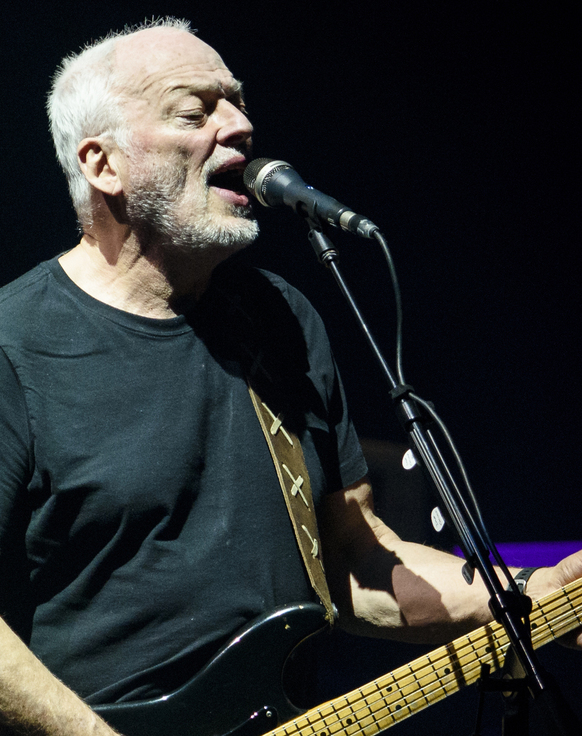

Общая информация
Название: Pink Floyd — легендарная рок-группа
Страна: Великобритания (Лондон)
Годы: 1965–2014
Pink Floyd — одна из самых влиятельных групп в истории рок-музыки, известная своими инновационными подходами в записи и визуальном оформлении альбомов. Их творчество стало символом эпохи, а культовые альбомы, такие как The Dark Side of the Moon, Wish You Were Here и The Wall остаются актуальными и сегодня.
Состав группы
Ник Мейсон (Nick Mason)
Ударник группы, отвечавший за ритмическую основу и стабильную работу за ударными. Один из основателей коллектива.
Ричард Райт (Rick Wright)

Клавишник, чьи мелодичные и гармонические линии стали визитной карточкой группы.
Роджер Уотерс (Roger Waters)
Бас-гитарист и автор текстов, чьи философские темы и социальный подтекст лежат в основе творчества группы.
Сид Баррет (Syd Barrett)
Основоположник группы, чей нестандартный подход к музыке заложил фундамент для первых экспериментов коллектива.
Дэвид Гилмор (David Gilmour)
Гитарист и вокалист, чьи эмоциональные соло и глубокий вокал внесли решающий вклад в узнаваемость группы.
Их совместная работа создала уникальное наследие, которое продолжает вдохновлять слушателей по всему миру.